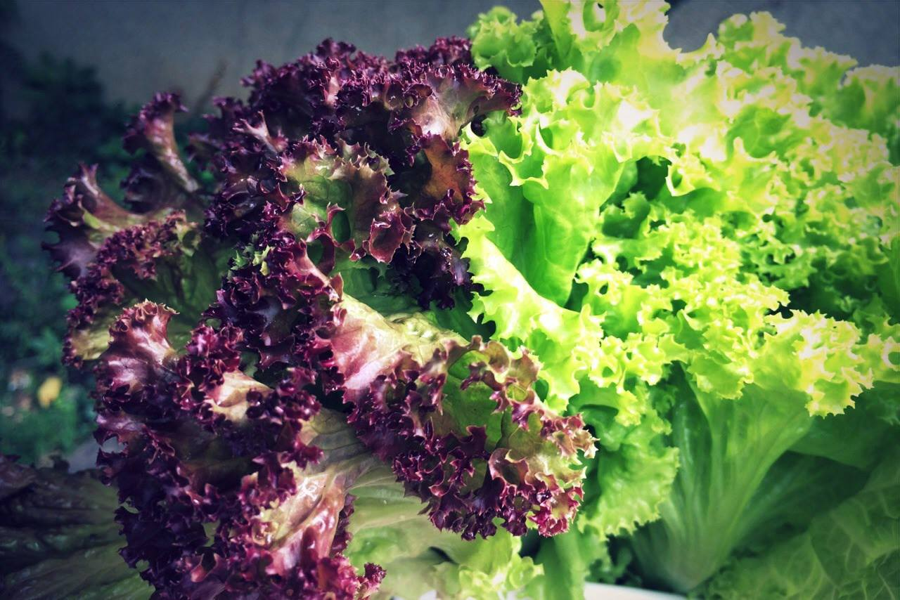

 
 <!DOCTYPE html>
 <head>
     <!--指定網頁所使用的編碼-->
     <meta charset="utf-8">
     <!--網頁標題-->
     <title>植物工廠滴灌養殖系統</title>
     <!-- Boostrap 導入程式 -->
     <script src="https://cdn.jsdelivr.net/npm/bootstrap@5.1.1/dist/js/bootstrap.bundle.min.js" integrity="sha384-/bQdsTh/da6pkI1MST/rWKFNjaCP5gBSY4sEBT38Q/9RBh9AH40zEOg7Hlq2THRZ" crossorigin="anonymous"></script>
        
        
     <link rel="stylesheet" href="./stylesheets/bootstrap.min.css">
     <script src="./javascripts/bootstrap.min.js"></script>
     

     <script src="https://cdnjs.cloudflare.com/ajax/libs/jquery/3.6.0/jquery.min.js"></script>

     <link rel="stylesheet" href="/stylesheets/w3.css">

     
     <link rel="stylesheet/less" href="stylesheets/navigation.less">
     <script src="https://cdnjs.cloudflare.com/ajax/libs/less.js/3.12.2/less.min.js"></script>
     
     <script src="https://code.jquery.com/jquery-3.6.0.min.js"></script>
     <script src="javascripts/jquery-tablepage-1.0.js"></script>
     <link rel="stylesheet" href="stylesheets/loding.css">
    <script src="https://code.highcharts.com/highcharts.js"></script>
    <script src="https://code.highcharts.com/modules/exporting.js"></script>
    <script src="https://code.highcharts.com/modules/export-data.js"></script>
    <script src="https://code.highcharts.com/modules/accessibility.js"></script>
 </head>
<body>
  <script src="https://code.iconify.design/iconify-icon/1.0.2/iconify-icon.min.js"></script>
    <aside class="sidebar">
        <div id="leftside-navigation3" class="nano">
          
          <nav class="navbar">
            <ul class="navbar__menu">
              <li class="navbar__item">
                <a href="index.html" class="navbar__link"><iconify-icon icon="heroicons:arrow-left-on-rectangle" style="font-size:xx-large; color: #000;"></iconify-icon><span>exit</span></a>
              </li>
              <li class="navbar__item">
                <a href="home.html" class="navbar__link"><iconify-icon icon="carbon:agriculture-analytics" style="font-size:xx-large; color: #000;"></iconify-icon><span>監控系統</span></a>        
              </li>
              <li class="navbar__item">
                <a href="record.html" class="navbar__link"><iconify-icon icon="quill:cloudia" style="font-size:xx-large; color: #000;"></iconify-icon><span>資料庫查詢</span></a>        
              </li>
              <li class="navbar__item">
                <a href="openapi.html" class="navbar__link"><iconify-icon icon="bx:bar-chart-alt" style="font-size:xx-large; color: #000;"></iconify-icon><span>市場價格</span></a>        
              </li>
              <div class="navbar__link" style="width: 80px;">
                
              </div>
              <div class="navbar__link" style="width: 80px;">
                
              </div>
              <div class="navbar__link" style="width: 80px;">
                <span>喵</span>
                
              </div>
            </ul>
            
          </nav>
          
        </div>

        <div id="rightside-navigation3" class="nano">
        
        
        <ul class="nav nav-tabs">

             
          <li class="1 active"><a data-toggle="tab"  href="#" onclick="Certificate1(this.value)">每周趨勢圖</a></li>
          <!--<li class="2 "><a data-toggle="tab" href="#" onclick="Certificate2()">啟動紀錄</a></li>
          <li class="3 "><a data-toggle="tab" href="#" onclick="Certificate3()">專案紀錄</a></li>-->
          
        </ul>
        
        
          <select id="mk" value="" name="customers" onchange=apichart();>
            
            <option value="台北二">台北二</option>
            <option value="台北一">台北一</option>      
            <option value="台北市場">台北市場</option>
            <option value="板橋區 ">板橋區</option>
            <option value="桃農">桃農</option>
            <option value="台中市">台中市</option>
            <option value="三重區">三重區</option>
            <option value="宜蘭市">宜蘭市</option>
            <option value="豐原區">豐原區</option>
            <option value="南投市">南投市</option>
            <option value="高雄市">高雄市</option>
            <option value="鳳山區">鳳山區</option>
            <option value="屏東市">屏東市</option>
            <option value="台東市">台東市</option>

          </select>
          
          
        
          <div class="w3-card-4 center"> 
            
            <div class="apirow">
              
              <div class="pris">
                <table class="table table-hover" style="margin-bottom: 10px">
                  <tbody><tr><th class="text-left t1" colspan="2">本週平均批發價:</th></tr>
                  <tr><th class="text-right vege_chart_th_number"><span class="text-price p1"></span></th><th class="vege_chart_th_unit"> (元/公斤) </th></tr>
                                          <tr><th class="text-right vege_chart_th_number"><span class="text-price p2"> </span></th><th class="vege_chart_th_unit">(元/台斤)</th></tr>
                                          
                                          <tr><th class="text-left" colspan="2">成交量:</th></tr>
                  <tr><th class="text-right  vege_chart_th_number"> <span class="text-price volume tq1"></span></th><th class="vege_chart_th_unit"> 公噸</th></tr>
                </tbody>
                <div class="price-title n1"></div>
                
                
              </table>
                
              </div>
                
              <div>
                  <figure class="highcharts-figure">
                  <div id="container">
                    
                    <div class="lds-ellipsis">&nbsp loading<div></div><div></div><div></div><div></div></div>
                  </div>
                  
                  <div id="api"></div>
                  
                </figure>
              </div>
  
  
                
            </div>
          </div>

          <br>

          <div class="w3-card-4 center"> 
            <div class="apirow">
              <div class="pris">
                <table class="table table-hover" style="margin-bottom: 10px">
                  <tbody><tr><th class="text-left t2" colspan="2">本週平均批發價:</th></tr>
                  <tr><th class="text-right vege_chart_th_number"><span class="text-price p3"> </span></th><th class="vege_chart_th_unit"> (元/公斤) </th></tr>
                                          <tr><th class="text-right vege_chart_th_number"><span class="text-price p4"> </span></th><th class="vege_chart_th_unit">(元/台斤)</th></tr>
                                          
                                          <tr><th class="text-left" colspan="2">成交量:</th></tr>
                  <tr><th class="text-right  vege_chart_th_number"> <span class="text-price volume tq2"></span></th><th class="vege_chart_th_unit"> 公噸</th></tr>
                </tbody>
                <div class="price-title n2"></div>
                
                
              </table>
                
              </div>
                
              <div>
                  <figure class="highcharts-figure">
                  <div id="container2">
                   
                    <div class="lds-ellipsis">&nbsp loading<div></div><div></div><div></div><div></div></div>
                  </div>
                  
                  <div id="api"></div>
                  
                </figure>
              </div>
  
  
                
            </div>
          </div>


          <br>

          <div class="w3-card-4 center"> 
            <div class="apirow">
              <div class="pris">
                <table class="table table-hover" style="margin-bottom: 10px">
                  <tbody><tr><th class="text-left t3" colspan="2">本週平均批發價:</th></tr>
                  <tr><th class="text-right vege_chart_th_number"><span class="text-price p5">0</span></th><th class="vege_chart_th_unit"> (元/公斤) </th></tr>
                                          <tr><th class="text-right vege_chart_th_number"><span class="text-price p6">0</span></th><th class="vege_chart_th_unit">(元/台斤)</th></tr>
                                          
                                          <tr><th class="text-left" colspan="2">成交量:</th></tr>
                  <tr><th class="text-right  vege_chart_th_number"> <span class="text-price volume tq3">0</span></th><th class="vege_chart_th_unit"> 公噸</th></tr>
                </tbody>
                <div class="price-title n3"></div>
                
                
              </table>
                
              </div>
                
              <div>
                  <figure class="highcharts-figure">
                  <div id="container3">
                    
                    <div class="lds-ellipsis">&nbsp loading<div></div><div></div><div></div><div></div></div>
                  </div>
                  
                  <div id="api"></div>
                  
                </figure>
              </div>
  
  
                
            </div>
          </div>


          
          <br>

          <div class="w3-card-4 center"> 
            <div class="apirow">
              <div class="pris">
                <table class="table table-hover" style="margin-bottom: 10px">
                  <tbody><tr><th class="text-left t4" colspan="2">本週平均批發價:</th></tr>
                  <tr><th class="text-right vege_chart_th_number"><span class="text-price p7">0 </span></th><th class="vege_chart_th_unit"> (元/公斤) </th></tr>
                                          <tr><th class="text-right vege_chart_th_number"><span class="text-price p8">0 </span></th><th class="vege_chart_th_unit">(元/台斤)</th></tr>
                                          
                                          <tr><th class="text-left" colspan="2">成交量:</th></tr>
                  <tr><th class="text-right  vege_chart_th_number"> <span class="text-price volume tq4">0</span></th><th class="vege_chart_th_unit"> 公噸</th></tr>
                </tbody>
                <div class="price-title n4"></div>
                
                
              </table>
                
              </div>
                
              <div>
                  <figure class="highcharts-figure">
                  <div id="container4">
                    
                    <div class="lds-ellipsis">&nbsp loading<div></div><div></div><div></div><div></div></div>
                  </div>
                  
                  <div id="api"></div>
                  
                </figure>
              </div>
  
  
                
            </div>
          </div>


            
          </div>
        </div>

        

        


 <script>
     
    

    //$(document).ready(function() {

    // Handler for .ready() called.
      function apichart() {   
        var str = document.getElementById("mk").value;
                  //$('#mk').val;
        if (str != "") {
         
          $.get("/api/"+str,function(res, status){ $("#api").html(res); });    
          return;
        }  
        
      }
      
      apichart();

    //}); 
    
    
    function Certificate1() {     
        $("li").removeClass('active'); 
        $(".1").addClass('active');


    }

    function Certificate2() {
    $("li").removeClass('active'); 
    $(".2").addClass('active');

    } 
    function Certificate3() {
    $("li").removeClass('active'); 
    $(".3").addClass('active');

    }
 </script>
 

</body>
</html>